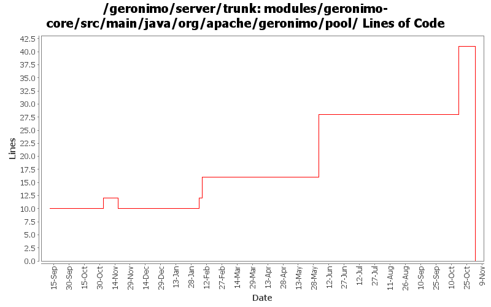

[root]/modules/geronimo-core/src/main/java/org/apache/geronimo/pool

| Author | Changes | Lines of Code | Lines per Change |
|---|---|---|---|
| Totals | 18 (100.0%) | 55 (100.0%) | 3.0 |
| akulshreshtha | 2 (11.1%) | 18 (32.7%) | 9.0 |
| djencks | 1 (5.6%) | 13 (23.6%) | 13.0 |
| jlaskowski | 2 (11.1%) | 12 (21.8%) | 6.0 |
| jdillon | 2 (11.1%) | 7 (12.7%) | 3.5 |
| ccardona | 1 (5.6%) | 4 (7.3%) | 4.0 |
| rickmcguire | 1 (5.6%) | 1 (1.8%) | 1.0 |
| prasad | 3 (16.7%) | 0 (0.0%) | 0.0 |
| kevan | 6 (33.3%) | 0 (0.0%) | 0.0 |
GERONIMO-3565. Modules distributed amongst framework/modules and plugins
0 lines of code changed in 3 files:
GERONIMO-3250 Make TransactionManager a Statistics Provider. Patch by Viet H. Nguyen
14 lines of code changed in 1 file:
GERONIMO-3246 Cleanup exception handling so stack traces for first failures are not discarded.
1 lines of code changed in 1 file:
GERONIMO-3034 GERONIMO-2655 New SelectChannel and AJP connectors. Also hook the connectors up to our thread pool
13 lines of code changed in 1 file:
r6720@Bliss: jason | 2007-03-20 01:48:14 -0700
(GERONIMO-2995) Replace backport-util-concurrent usage with java.util.concurrent
7 lines of code changed in 2 files:
GERONIMO-2517 Added resetStats to StatisticsProvider
GERONIMO-1293 Added implementation of resetStats() for tomcat
4 lines of code changed in 1 file:
Removed class BoundedRangeImpl and replaced with class BoundedRangeStatisticImpl
4 lines of code changed in 1 file:
GERONIMO-2537 Update the src headers in server/trunk/modules to be compliant with the new ASF src header and copyright policy (http://www.apache.org/legal/src-headers.html). I also did some cleanup of the src headers and tried to make them all a consistent format
0 lines of code changed in 2 files:
Partial fix for GERONIMO-2537 All Geronimo source files must be brought in line with the new ASF source header and copyright notice policy
The modules directory is supposed to be migrated. There're some issues with some files, but they'll be handled manually
12 lines of code changed in 2 files:
GERONIMO-2354 Replace concurrent with backport-concurrent-util package
0 lines of code changed in 4 files: